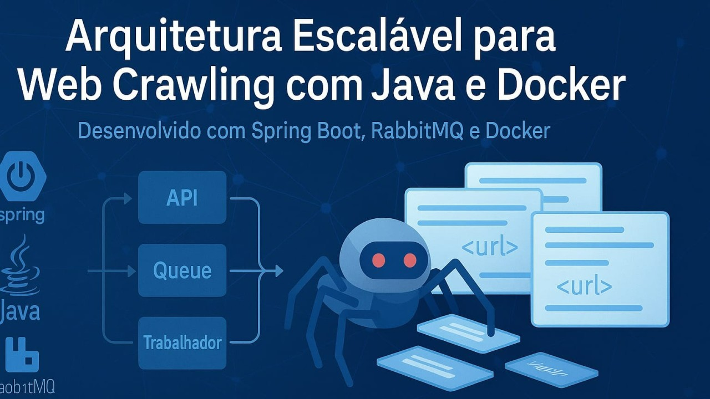

Arquitetura Escalável Para Web Crawling Com Java E Docker - Um Caso Real

Extraia dados da web com eficiência: veja como uma API moderna com Java e Docker resolve esse desafio.
Arquitetura Escalável para Web Crawling com Java e Docker: Um Caso Real
Desenvolvedor Java Sênior | Especialista em Back-end | Jakarta, Spring Boot, REST APIs, Docker | Engenheiro Químico
19 de julho de 2025
Como projetar um sistema de crawling moderno, assíncrono e escalável com Spring Boot, RabbitMQ e Docker
Introdução
Neste artigo, apresento a arquitetura por trás da Web Crawler API, um projeto open source construído em Java que realiza buscas inteligentes e paralelas na web. Ele foi desenvolvido para ser confiável, observável e facilmente escalável, aproveitando o melhor do ecossistema Spring, mensageria com RabbitMQ e infraestrutura com Docker/Kubernetes.
Uma História para Entender a Aplicação
Imagine que você está pesquisando sobre \"novas tecnologias em energia solar\". Você entra em dezenas de sites, blogs e fóruns, abrindo página por página manualmente e procurando por qualquer menção relevante. Isso pode levar horas, dias ou até semanas.
Agora, imagine que você tem um assistente digital, super-rápido, que consegue fazer isso em segundos. Você diz a ele: \"procure por \'energia solar bifacial\' em todos os sites especializados\". Esse assistente então visita automaticamente centenas de páginas, lê o conteúdo e te entrega uma lista com todas as URLs que contêm esse termo.
Esse é o papel da Web Crawler API: um sistema automatizado que pode ser usado por empresas, pesquisadores ou desenvolvedores para encontrar conteúdo específico na web, de forma segura, escalável e com resultados em tempo real.
Motivação
A maioria dos crawlers é feita com scripts monolíticos que não escalam, falham silenciosamente ou geram sobrecarga no servidor alvo. O objetivo aqui foi criar uma API REST moderna, com:
-
Processamento assíncrono
-
Escalabilidade horizontal
-
Separação de responsabilidades
-
Monitoramento e logs estruturados
-
Deploy simplificado com Docker
Visão Geral da Arquitetura
┌───────────────┐ ┌───────────────┐ ┌───────────────┐
│ Controller │→ │ Service │→ │ RabbitMQ │
│ (API REST) │ │ (Negócio) │ │ (Fila Tarefas)│
└───────────────┘ └───────────────┘ └───────────────┘
│
▼
┌───────────┐
│ Worker │ (Crawling)
└───────────┘
│
▼
Banco de Dados (H2)
Componentes Principais
Spring Boot 3.x
Framework principal da aplicação, usando:
-
Spring Web: criação da API REST
-
Spring Data JPA: abstração da camada de dados
-
Spring AMQP: integração com RabbitMQ
-
Spring Actuator: métricas e health check
RabbitMQ
Message broker que permite:
-
Execução assíncrona
-
Retentativa em falhas
-
Paralelismo com múltiplos workers
JSoup
Parser HTML usado pelos workers para extrair e analisar conteúdo das páginas.
Docker e Docker Compose
Permitem:
-
Ambientes isolados para testes/desenvolvimento
-
Execução de todos os serviços com um comando
docker-compose up --build -dFluxo de Execução
-
Cliente envia POST /crawl com um termo de busca
-
API gera um ID único e envia mensagem ao RabbitMQ
-
Worker escuta fila, inicia o crawling
-
URLs contendo o termo são armazenadas
-
Cliente pode consultar progresso em tempo real com GET /crawl/{id}
Escalabilidade
-
Workers são stateless → podem ser replicados horizontalmente
-
RabbitMQ suporta múltiplas filas e concorrência alta
-
Separação entre API e crawler → desacoplamento total
Observabilidade
-
Logs estruturados (Spring Boot + Logback)
-
Health checks e métricas em /actuator
-
RabbitMQ com painel web (localhost:15672)
-
Swagger UI para testes interativos da API
Testes e Qualidade
-
Cobertura de código: >90% com JUnit 5, Mockito, Testcontainers
-
Validação de regras de negócio e concorrência
-
Execução:
mvn test
mvn jacoco:reportDeploy
-
Local: Docker Compose
-
Produção: Kubernetes com Helm
helm install crawler-api ./helm/web-crawler-apiConclusão
A arquitetura escalável e desacoplada da Web Crawler API mostra como é possível construir sistemas robustos com tecnologias modernas do ecossistema Java. O uso de mensageria e containers garante performance e manutenibilidade, enquanto a separação de responsabilidades facilita testes, observação e evolução contínua.
➡️ Projeto completo no GitHub: github.com/chmulato/web-crawler-api
Autor: Christian Vladimir Uhdre Mulato